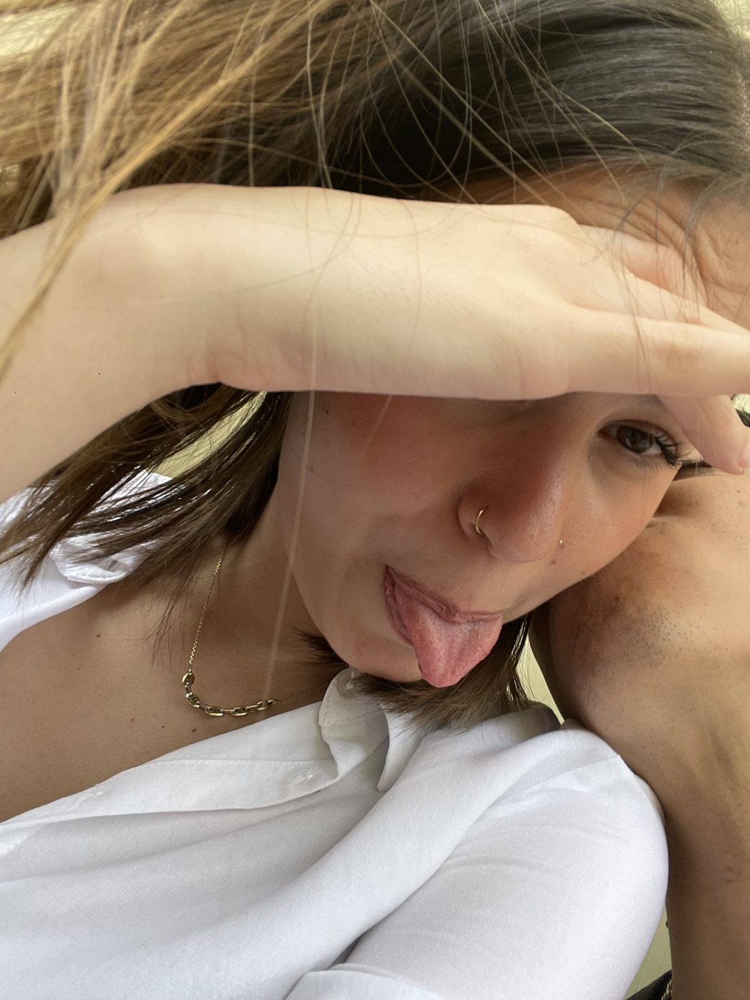
Tu cara
Todo en conjunto, el amor de tus ojos, la sinceridad de tu sonrisa cuando estás feliz, la felicidad que me transmites, todo eso me hace ser cada día un hombre más feliz.
de Lucas, para
✎ Una frase corta de inicio: lo primero que quieres que lea al abrir la página.
Sube conmigoplanta 1
Me acuerdo aún del día que nos vimos por primera vez, yo estaba con mi pelo de calvo y tú tan guapa como siempre. Fue el 21 de marzo y me acuerdo perfectamente de que nunca había estado tan nervioso por conocer a alguien. También recuerdo que te hablé tanto que posiblemente acabaste colapsada, pero ya sabes que era mi forma de demostrar lo nervioso que estaba, pero desde ese día me generaste una sensación imborrable, vi algo en ti que no podría explicar con palabras.
El momento exacto en el que me di cuenta de que eras distinta a todas las demás me es difícil de recordar, ya que creo que fueron muchas cosas, pero si tengo que destacar algo es la sinceridad que me transmitías al contarme las cosas, eras tú misma sin importar lo que fuese a pensar yo de ti y eso me hizo replantearme mucho el tipo de persona que eras, para bien, claramente. También siempre me ha encantado la confianza que me has transmitido desde el primer día y la forma en la que tratas a los demás, ya que me pareces una gran persona con cualquiera que lo necesite y eso es una virtud enorme.
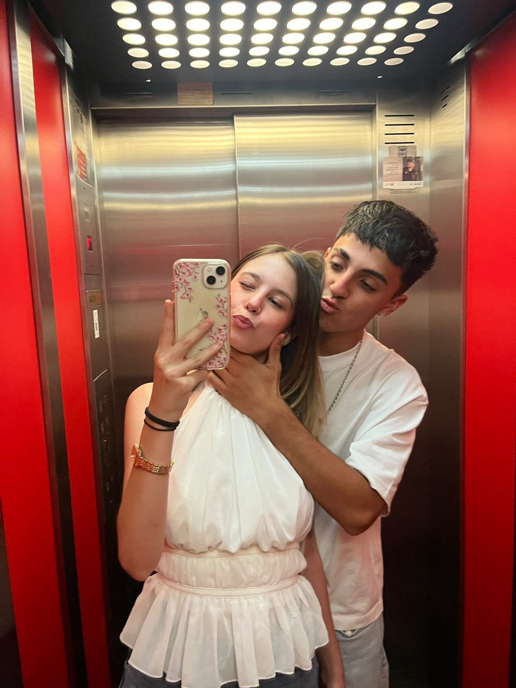
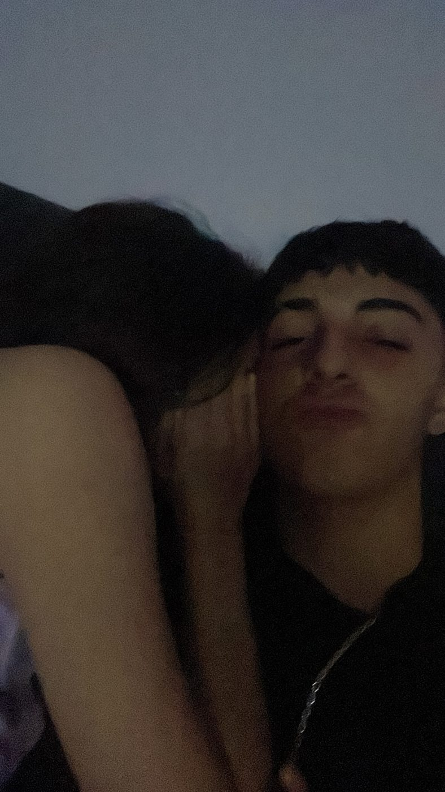
Tanto tiempo y tan rápido que se me pasa contigo...
planta 2
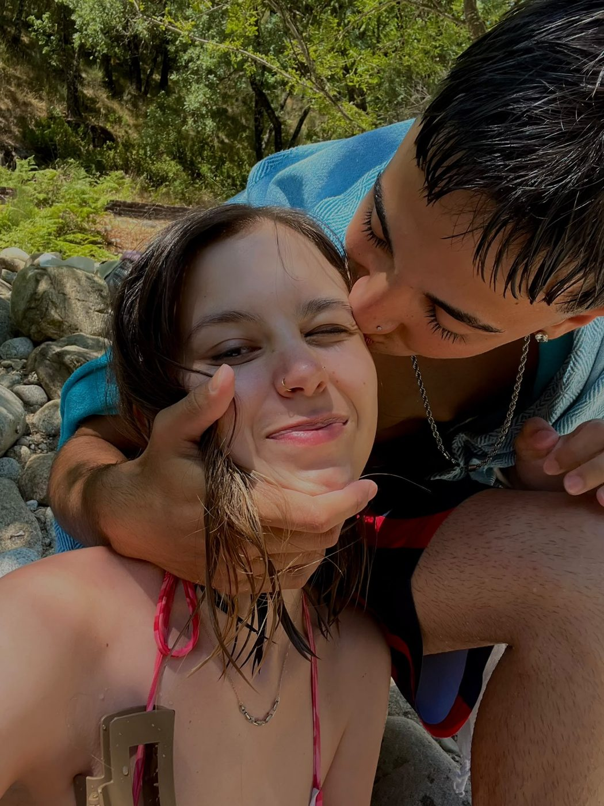
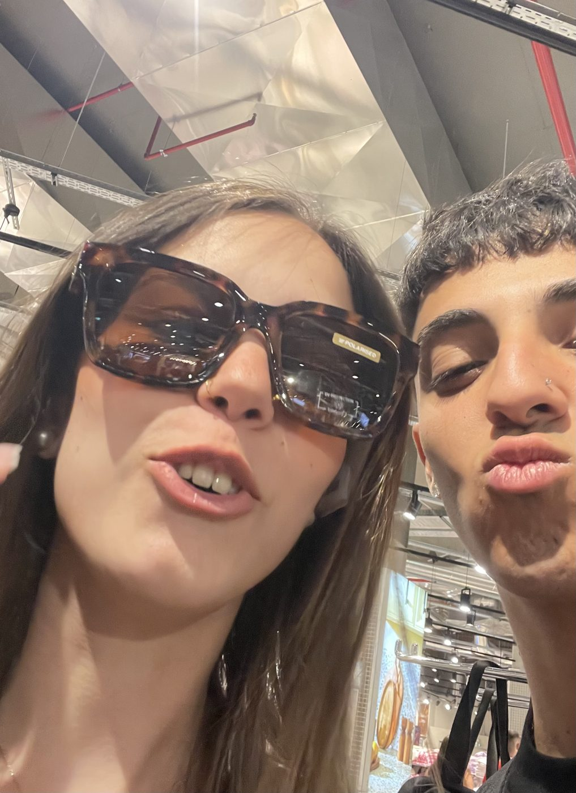
planta 3

Todo en conjunto, el amor de tus ojos, la sinceridad de tu sonrisa cuando estás feliz, la felicidad que me transmites, todo eso me hace ser cada día un hombre más feliz.
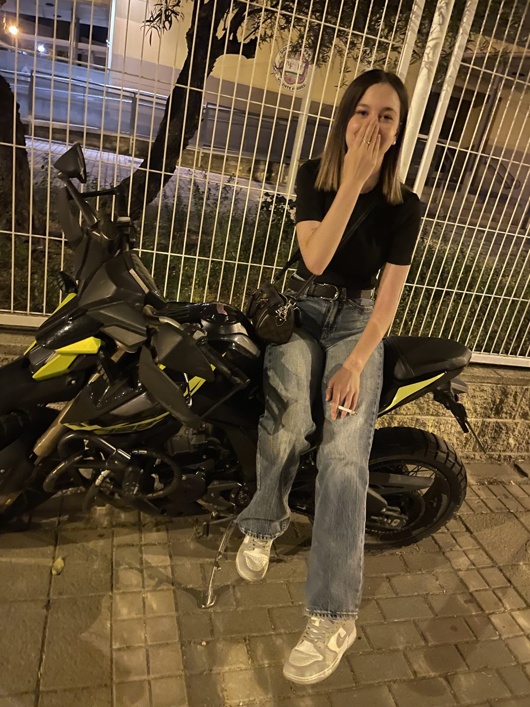
Siempre me ha encantado tu estilo en general, los gustos que tienes para la ropa y lo guapa que te pones siempre y sobre todo tus gustos musicales y los planes que te gusta hacer, ya que siempre que me propones un plan me lo paso genial.
planta 4
Todos estos recuerdos que he podido recopilar...
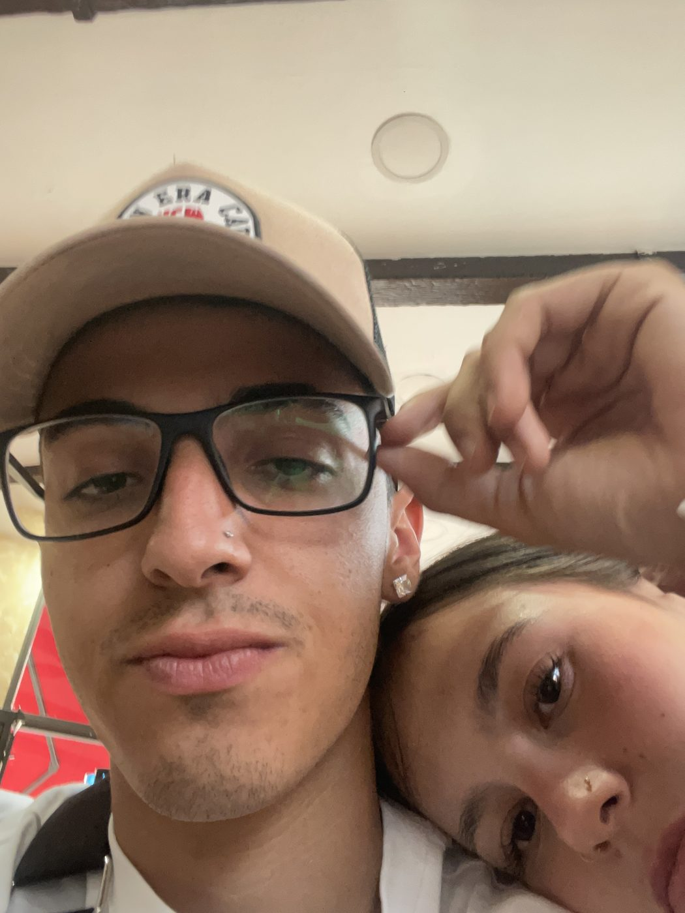
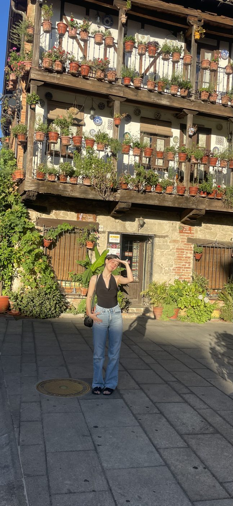
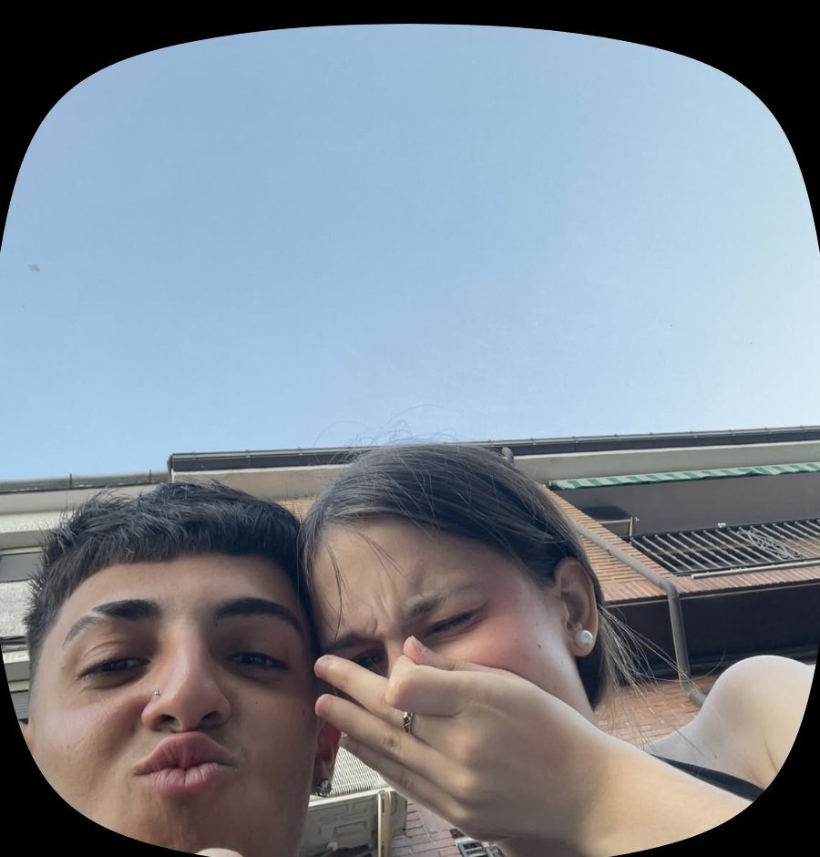
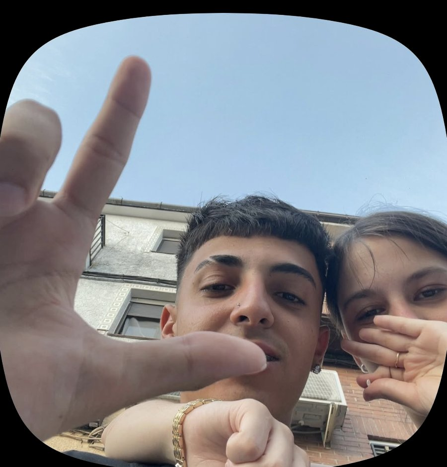
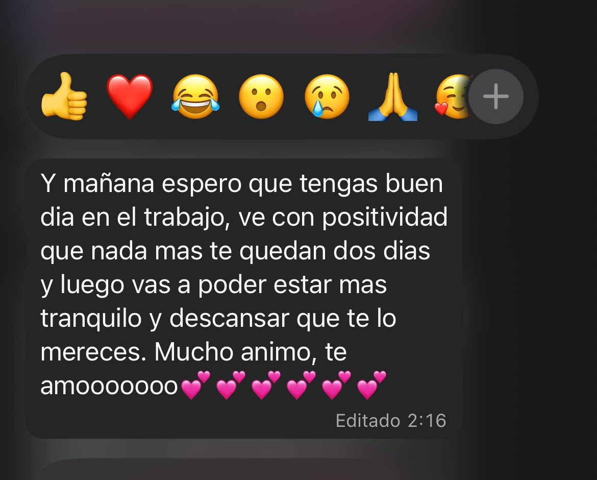
planta 5
Cuando estés triste, acuérdate de todos los momentos buenos que hemos pasado juntos y de que tienes a tu alrededor gente que te quiere de verdad, y yo el que más.
Eres la persona más especial que tengo en mi vida y nunca podría mi corazón dejar de sentir cosas por ti. Eres mi razón para seguir adelante cuando tengo problemas en mi vida. De verdad que eres muy importante para mí y a pesar de que pueda haberte creado dudas, de verdad que espero poder quitar esas dudas para siempre.
Cuando nos echemos de menos quiero que veas esta página que he creado con todo mi amor y recuerdes todos estos momentos e intentes imaginarte que estoy ahí contigo abrazándote y dándote todo mi amor.
planta 6
última planta
Bueno amorcito, si subiste hasta esta planta significa que de verdad te está gustando, y eso me alegra mucho. Esta parte final creo que es la más importante y la que quería hacer justo antes de darte este regalo, ya que aquí voy a expresar todos mis sentimientos y mis pensamientos actuales sobre ti. Sé que últimamente puede haber algo en mí que no sé qué es exactamente, pero te está haciendo dudar si te voy a dejar de querer o si me estoy cansando de ti, y como ya te he dicho en algunas ocasiones, eso no tiene ningún sentido, pero no quiero decirte lo mismo de siempre porque sé que te cuesta creerlo y es normal. Estas inseguridades que te han entrado de verdad que me ponen super triste porque yo siempre he tenido un sentimiento super fuerte hacia ti y siempre lo voy a tener. Lo único que quiero que sepas siempre es que bueno pienso que las personas podemos tener buenas y malas rachas en cuanto a la vida y también en cuanto a las relaciones también, pero eso no cambia un sentimiento puro de amor que le tienes a alguien. Yo sí que he notado sobre todo que mi reacción sobre los problemas que podemos tener a lo mejo es un poco más exaltada que antes o que estoy un poco más apático, pero analizando mis sentimientos y de verdad que los he analizado para llegar a la raíz de este problema, no tiene nada que ver contigo y no ha cambiado nada en mis sentimientos hacia ti, no sé qué puede estar causando esta forma de ser, pero es algo más general. Lo que sí he pensado es que tengo que pensar todo esto antes de actuar porque mis actos pueden tener consecuencias en ti y crearte pensamientos que no deberían estar y no pretendo que ya por leer esto te va a cambiar la mentalidad, pero por eso exactamente voy a cambiar todo eso que te hace pensar esas cosas que de verdad no tienen nada que ver con lo que pienso y vas a sentirte como te mereces, como una reina, porque tú eres la reina de mi vida. También quiero decirte que en todo este tiempo después de las cosas que nos han pasado me he dado cuenta que te amo de verdad, de una manera muy pura, porque en su día me entraron dudas de lo que me decías sobre que si estaba obsesionado simplemente o que si tenía demasiada dependencia y no sé, le he dado muchas vueltas a eso y después de un tiempo tengo claro que lo que siempre he sentido por ti es amor de verdad. Dicho todo esto bebé, solo quiero que no lo des por perdido, que no te fijes solo en estas dos semanas, que te fijes en todas las anteriores y todas las que vienen porque de verdad que voy a reflexionar mucho sobre esto, pero sé perfectamente que mi amor por ti sigue estando ahí como siempre y te lo voy a demostrar. No espero que cambies de opinión completamente con este regalo porque entiendo que puedas pensar esas cosas aunque no sepa qué actitud he tenido para llegar a esto, solo espero que te guste y que tengas en cuenta todo el cariño que he puesto en ello. De verdad que tengo claro que eres el amor de mi vida y me siento una mierda por no haberte dado el trato que te mereces, aunque haya sido solo en este periodo. De verdad que ha sido todo inconscientemente y pensando que todo iba bien y como te he dicho no tiene nada que ver con lo que piensas porque te amo más que a nadie. Quiero que sigamos juntos hasta el final de nuestro ascensor y que ese ascensor sea el de nuestras vidas. De verdad que todo esto te lo digo desde mi mayor sinceridad y con el corazón en la mano, nunca me había dedicado tanto a expresar mis sentimientos escribiendo y de verdad solo quiero que los comprendas. No le veo el sentido a todo esto ni cómo ha podido pasar, pero simplemente pienso que ha podido ser un descuido claramente mío de no darme cuenta de ciertas cosas y no te mereces eso, por todo esto créeme que las cosas van a volver a ser como antes y serás mi novia, mi mujer y hasta la madre de mis hijos si de verdad nos lo proponemos, porque si no eres tú ¿quién va a ser mejor para mí?
Si le diste al botón, seguiremos toda la vida subiendo plantas en nuestro ascensor del amor y las podré añadir aquí. TE AMO